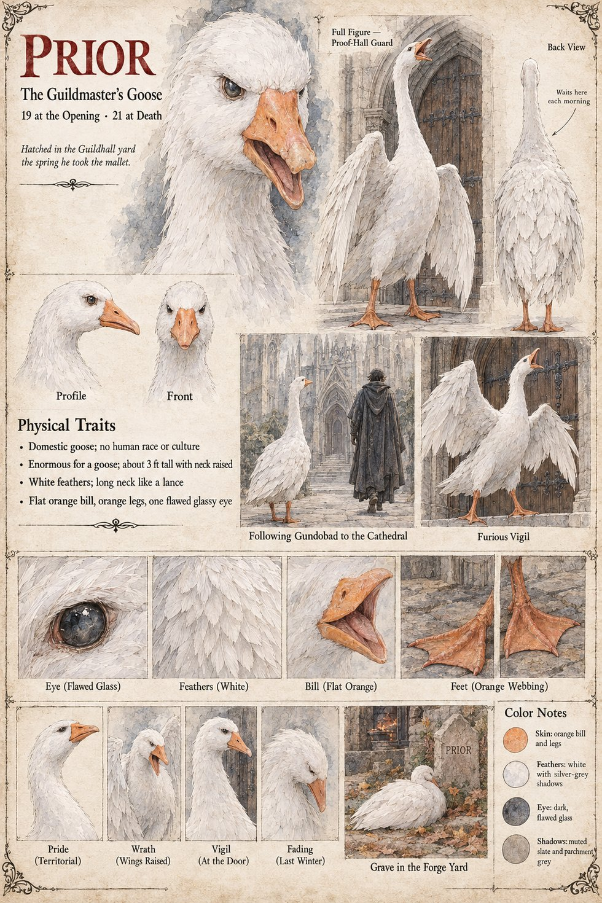

Prior
The Guildmaster's goose · 19 at the opening, 21 at her death
A domestic goose, white, enormous for her kind, about three feet tall with her neck raised, her neck long as a lance, with a flat orange bill, orange legs and one flawed, glassy dark eye. She belongs to Gundobad Rotger, the Guildmaster, and her sheet's tagline is Hatched in the Guildhall yard the spring he took the mallet. She is nineteen at the opening, and the Guildmaster's sheet gives nineteen years in office, so the two dates agree. Her sheet draws her as the guard of the Proof-hall: the full figure stands before a great iron-bound door, and a note on the back view reads Waits here each morning. In Furious Vigil she stands with her wings spread and her bill open against that door; in Following Gundobad to the Cathedral she walks behind a hooded, cloaked man up the cathedral approach. The publication notes give the other scene of her life, in Chapter 5: she is pacified by Higaide's bow, made slowly from the waist with his eyes lowered, and lowers her wings by a hand's breadth at a time.
The cathedral's Sacristan has a white goose near him in the porch on his sheet, presumably this one, and the publication notes have him record that the Guildmaster's weeping over his goose scandalized the whole yard. The last scene, Grave in the Forge Yard, draws her lying beside a small headstone cut PRIOR, a fire glowing in a doorway beyond. The sheet gives her age at death as twenty-one, and the notes place her death in Chapter 13; its panel Fading (Last Winter) has her head sunk on her breast. The notes say only “the forge yard”, and neither they nor the sheet say which forge's it is. Her other panels are Pride (Territorial), Wrath (Wings Raised) and Vigil (At the Door).
Written from the sheet, from what the other Case 4181 pages already say, and from the character notes in the case's publication-prep file; the manuscript itself was not to hand. Her ages of 19 at the opening and 21 at death, her white feathers with silver-grey shadows, orange bill and feet and dark flawed eye are the sheet's own.
“Hatched in the Guildhall yard the spring he took the mallet.”
Appears In

Related Subjects


Related Records

On the step of the Proof-Hall door Prior, the Guildmaster's goose, stands with her wings half-raised and her bill open over the doormat, and Higaide bows slowly from the waist with his eyes lowered until she lowers her wings a hand's breadth at a time; Ansbert leaps back with a wrapped sword on his arm, and a junior master in the doorway holds his breath.